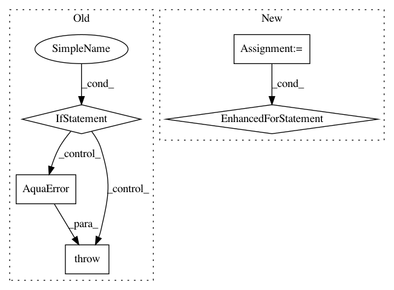

744dad06bec303f437f4474e3730c9f3e8e700a9,qiskit/aqua/circuits/gates/controlled_ry_gate.py,,cry,#Any#Any#Any#Any#,28
Before Change
AquaError: invalid input
if not isinstance(q_control, Qubit):
raise AquaError("A qubit is expected for the control.")
if not self.has_register(q_control.register):
raise AquaError("The control qubit is expected to be part of the circuit.")
if not isinstance(q_target, Qubit):
After Change
qubits = [q_control, q_target]
names = ["control", "target"]
for qubit, name in zip(qubits, names):
if isinstance(qubit, Qubit):
if not self.has_register(q_control.register):
raise AquaError("The {} qubit is expected to be part of the circuit.".format(name))
elif isinstance(qubit, int):
if qubit >= self.n_qubits:
raise AquaError("Qubit index out of range.")
else:
raise AquaError("A qubit or int is expected for the {}.".format(name))
if q_control == q_target:
raise AquaError("The control and target need to be different qubits.")
self.u3(theta / 2, 0, 0, q_target)
In pattern: SUPERPATTERN
Frequency: 3
Non-data size: 5
Instances
Project Name: Qiskit/qiskit-aqua
Commit Name: 744dad06bec303f437f4474e3730c9f3e8e700a9
Time: 2019-11-12
Author: jules.gacon@googlemail.com
File Name: qiskit/aqua/circuits/gates/controlled_ry_gate.py
Class Name:
Method Name: cry
Project Name: Qiskit/qiskit-aqua
Commit Name: 2aae12b10a3411009a2802a077bb8c6c0365b6ad
Time: 2020-08-28
Author: 31178928+t-imamichi@users.noreply.github.com
File Name: qiskit/aqua/operators/converters/abelian_grouper.py
Class Name: AbelianGrouper
Method Name: group_subops
Project Name: Qiskit/qiskit-aqua
Commit Name: d154be3a085fc40bb8540ddf285a8adfc90aa868
Time: 2019-02-15
Author: shaohan.hu@ibm.com
File Name: test/test_bernsteinvazirani.py
Class Name: TestBernsteinVazirani
Method Name: test_bernsteinvazirani